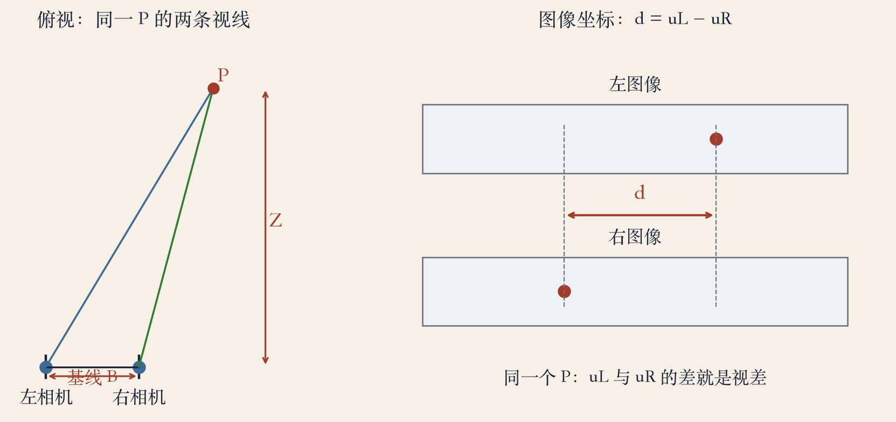
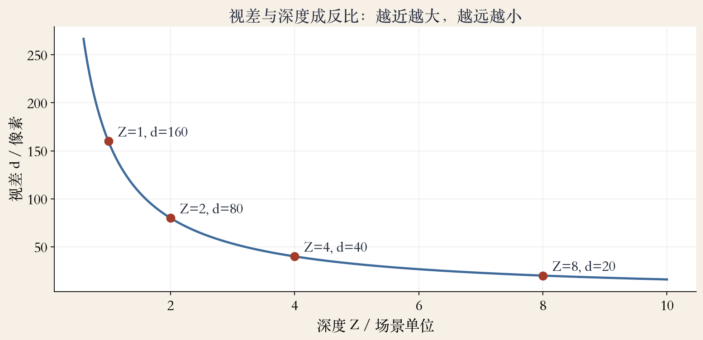
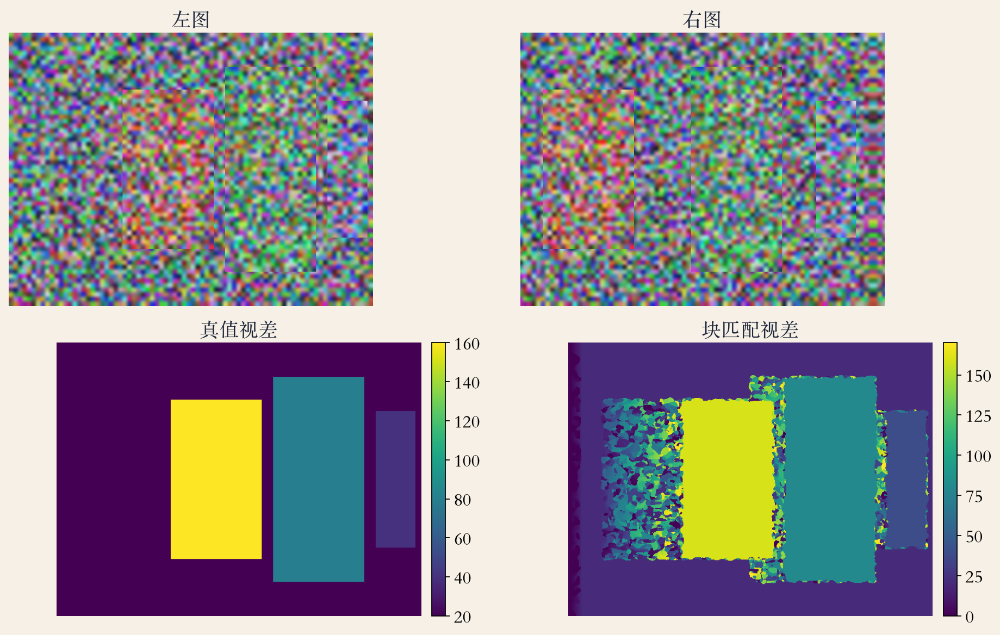

第 12 章 · 立体视觉
视差：两只眼睛的几何
- 立体匹配把两张图变成三维深度。
- 上一章给稀疏点，这一章给每像素深度。
- 人眼用左右错位判断远近。
- 深度是三维量，视差是二维观测。
依据：原书第 751 页
两条线
稀疏点 → 稠密深度
视差：把深度变成匹配
几何：把视差换回深度
原书第 751 页 · 手指实验
手指实验：跳多少是视差
- 竖起手指，交替闭左右眼。
- 手指相对背景会左右跳。
- 越近跳得越大，越远跳得越小。
- 视差是横坐标差，不是眼睛转角。
依据：原书第 751 页
判断依据
同一个点的左右横坐标差
背景越远，跳动越明显
横屏拍摄，差沿水平方向
原书第 751 页 · 基线
几何：视差与深度成反比
- 基线 B：左右相机的距离。
- 深度 Z：观察者到物体的距离。
- 视差 d = uL − uR。
- Z 越大，d 越小；远山几乎没立体。
依据：原书第 751 页

视差几何：基线 B、深度 Z、左右图横坐标差 d｜程序生成，未用教材或论文原图
原书第 751 页 · 反比
公式：d=fB/Z
- f 是焦距（像素），B 是基线，Z 是深度。
- 基线越宽，视差越大，远处越能测。
- 焦距越长，视差越大，视野越窄。
- 深度越远，视差越小，量化误差越大。
依据：原书第 751 页；公式由相似三角形整理

d=fB/Z：近处视差大，远处视差小｜程序生成，未用教材或论文原图
原书第 751 页 · 稠密对应
难点：弱纹理、重复、遮挡
- 弱纹理区没有可匹配的图案。
- 重复纹理让匹配跳到隔壁。
- 遮挡区在一个相机里看不到。
- 前景边缘的窗口会混进背景。
依据：原书第 751 页
还会破坏假设
镜面反光、曝光变化
运动模糊、亮度不一致
弱纹理的代价曲线很平
原书第 753 页 · 校正
极线：二维搜索降成一维
- 极线给出另一张图里的可能位置。
- 校正后，对应极线在同一行。
- 只沿水平方向找，速度快很多。
- 线上不保证唯一，重复纹理有多个峰。
依据：原书第 753 页
校正做什么
预变形两张图
让对应极线重合
视差只沿 u 轴
原书第 753 页 · 分类
三条路线：局部、全局、网络
- 局部窗口聚合：快，边界容易错。
- 全局优化：更连贯，但慢、参数敏感。
- 深度网络：学先验，依赖训练分布。
- 半全局 SGM 用多条一维路径近似。
依据：原书第 753 页
取舍
没有一种方法通吃
本集先用手写块匹配
下一集讲完整流水线
合成双目 · 640×480
实验：四层深度
- 合成 4 层：1、2、4、8 场景单位。
- 基线 0.2，焦距 800 像素。
- 视差分别是 160、80、40、20 像素。
- 近层遮住远层，自然产生遮挡。
依据：本集实验

合成双目：左图、右图与真值/估计视差（1/2/4/8 场景单位，视差 160/80/40/20 像素）｜程序生成，未用教材或论文原图
本集实验 · 块匹配
结果：0.182 px 与 23.65 px
- 内部平均误差 0.182 像素。
- 99.8% 的像素误差在 1 像素内。
- 四个层中心深度误差为 0。
- 边界和遮挡平均误差 23.65 像素。
依据：本集实验
为什么差这么多
边界窗口混进另一深度
遮挡区没有对应像素
真实系统用一致性检查近似
工程经验 · 失败边界
失败边界：基线和分辨率
- 弱纹理、重复纹理、反光、模糊。
- 遮挡和深度不连续会系统性出错。
- 亚像素精度要插值或优化。
- 基线太短远处没视差，太长近处难。
依据：本集实验与工程经验
每一步都要盯
标定、校正
匹配、后处理
结构光、ToF、单目网络各有失效
原书第 751、753 页 · 应用
应用：从航片到 AR
- 摄影测量用重叠航片生成地形高程。
- 机器人导航、操作、视角插值。
- 三维建模、影视合成、增强现实。
- 手机人像虚化、自动驾驶测距。
依据：原书第 751、753 页
深度是几何信息
有了深度才能遮挡、测量
双摄和多摄原理相同
深度错了，合成会穿帮
收束 · 下一集
收束：视差、极线、稠密匹配
- 视差 d=fB/Z，越近越大。
- 极线把搜索从二维降到一维。
- 难点在弱纹理、重复、遮挡、边界。
- 下一集：代价、聚合、计算、优化。
依据：原书第 751–753 页